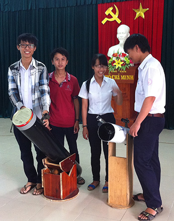

Những người trẻ mê thiên văn học

Lần cập nhật cuối lúc Thứ sáu, 26 Tháng 9 2014 09:01 Viết bởi Administrator Thứ năm, 25 Tháng 9 2014 00:00
Để có một sân chơi dành cho những người đam mê thiên văn học, Câu lạc bộ (CLB) Thiên văn học nghiệp dư Quảng Nam (NAC) đã được hình thành bởi những học sinh của Trường THPT chuyên Nguyễn Bỉnh Khiêm.

“CLB Thiên văn nghiệp dư Quảng Nam - NAC tiền thân là CLB Thiên văn Trường THPT chuyên Nguyễn Bỉnh Khiêm được thành lập từ đầu năm học 2012-2013, nòng cốt là các học sinh lớp 10 chuyên Lý. Sau đó thu hút thêm học sinh ở các lớp khác cũng như ngoài nhà trường. Ở đây, các em đã mua các linh kiện về lắp ráp kính thiên văn rồi học tập quan sát bầu trời qua bản đồ sao”- Thầy Phan Công Thành, người sáng lập CLB Sáng tạo trẻ chia sẻ. Các linh kiện làm kính thiên văn được mua rất dễ dàng như: vật kính, một gương cầu lõm, thị kính (giúp phóng to ảnh thu bởi gương cầu lõm có kích thước lớn thu ánh sáng từ các thiên thể sau đó ảnh thu được từ gương cầu lõm được phóng to qua thị kính). Các linh kiện này hiện có bán sẵn trên thị trường và mua thêm các ống nhựa để lắp ráp kính thiên văn rất dễ dàng.
Em Nguyễn Hoàng Thiên, lớp 12 chuyên Lý bày tỏ: “Được tham gia CLB Thiên văn thật sự là một niềm vui đối với tuổi trẻ chúng em, gần đây khi đi giao lưu ở Quy Nhơn chúng em không chỉ học được nhiều điều về thiên văn, vật lý mà còn được giao lưu với các nhà khoa học ở nước ngoài về. Ở trong NAC chúng ta không chỉ học lý thuyết mà còn thực hành nhiều hoạt động lý thú về thực nghiệm và thư giãn, ứng dụng lý thuyết vào thực tế cuộc sống”. Hiện NAC đã tham gia hai chương trình giao lưu Thiên văn toàn quốc tại Quy Nhơn (2013) và tại Đà Nẵng (8.2014) và đã tổ chức các buổi sinh hoạt giao lưu với CLB thiên văn trên cả nước như Hà Nội, Huế, Quảng Ngãi, Hồ Chí Minh để lại nhiều ấn tượng tốt đẹp. “Khi tham gia vào NAC mình nghĩ các bạn sẽ rất thích thú và thỏa mãn được niềm đam mê của mình, cũng là nơi mọi người có thể trao đổi kinh nghiệm, cũng có thể là nơi kết bạn, chia sẻ những kiến thức, khả năng tiềm ẩn trong mỗi bạn cụ thể hơn là về thiên văn học, vũ trụ học. Mình mới tham gia NAC vài tháng nhưng mình đã có nhiều kiến thức bổ ích và quen được nhiều bạn. Dịp vừa rồi mình được đi giao lưu CLB thiên văn cả nước ở Đà Nẵng, được học tập và có thêm động lực để mình và các bạn có thêm niềm đam mê nhiều hơn nữa về thiên văn”- em Nguyễn Thị Cẩm Châu , lớp 11 chuyên Anh phấn khởi.
Từ những thuận lợi trên nhiều hoạt động quan sát kính thiên văn được tổ chức theo định kỳ, tạo điều kiện mời các thành viên bên ngoài nhà trường tham gia, từ đó hình thành nên NAC. Đến thời điểm này, CLB vận hành được 2 năm nhưng đã có kết quả vui là em Lê Thị Ý Nhi, 12 chuyên Hóa vừa được nhận vào lớp không gian và ứng dụng Trường Đại học Khoa học công nghệ Hà Nội, một trường đại học công lập được giảng dạy hoàn toàn bằng tiếng Anh. Có thể nói Trường THPT chuyên Nguyễn Bỉnh Khiêm là điểm sáng trong công tác dạy học, học đi đôi với hành, học mà chơi. Ngoài CLB thiên văn thì nhà trường còn nhiều CLB như sáng tác văn học nghệ thuật - thơ, âm nhạc - hội họa thẩm mỹ, tiếng Anh, kiến trúc ... từ những sân chơi thế này tạo môi trường ươm mầm tài năng, tạo lập và phát triển nhiều ý tưởng sáng tạo, đặc biệt với CLB Thiên văn nghiệp dư Quảng Nam sẽ là bước đệm đầu tiên giúp học sinh chập chững nghiên cứu khoa học, trở thành những nhà sáng chế, nhà phát minh trong tương lai.
LỮ PHÚC HOÀNG (baoquangnam.com.vn)
itnbk.edu.vn
- itnbk.edu.vn
- 03/02/2015 07:03 - Băn khoăn với đổi mới giáo dục
- 31/01/2015 07:37 - Thứ trưởng Bộ GD-ĐT Nguyễn Vinh Hiển làm việ…
- 26/01/2015 16:59 - Bộ trưởng Bộ GĐ-ĐT chốt 10 điểm về kỳ thi quốc gia
- 11/11/2014 07:22 - Ra quân dọn vệ sinh hưởng ứng ngày Đô thị Việt Nam
- 18/10/2014 07:08 - Sáng tạo trẻ chuyên Nguyễn Bỉnh Khiêm
- itnbk.edu.vn
- 15/09/2014 08:52 - Trao giải 5 đề tài đạt giải cuộc thi sáng tạo than…
- 30/08/2014 07:07 - Một lớp có 5 em học sinh đỗ thủ khoa đại học
- 01/04/2014 15:52 - Bộ GD&ĐT vừa công bố lịch thi tốt nghiệp THPT năm …
- 28/03/2014 09:52 - Tam Kỳ - Phú Ninh tổ chức hội thi Khi tôi 18
- 12/02/2014 16:21 - Kỳ thi học sinh giỏi quốc gia năm học 2013 - 2014 …